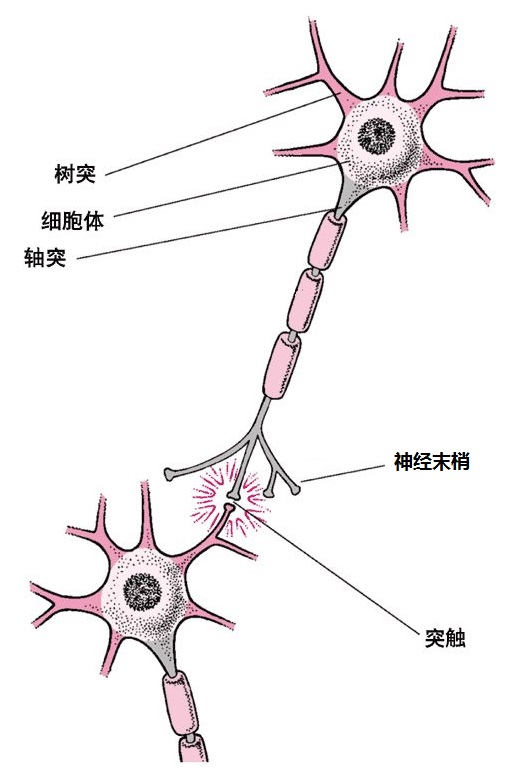
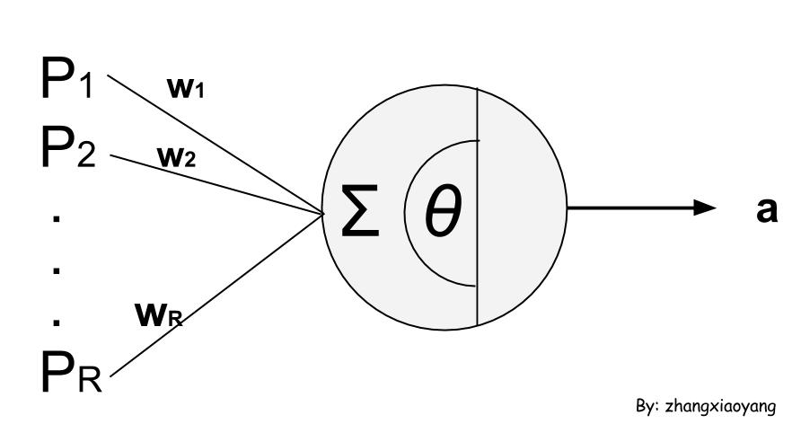

数据挖掘入门(5-3)
通过决策树和朴素贝叶斯分类器可以感觉到，分类的关键是有一个靠谱的分类器。朴素贝叶斯分类器以统计学为基础，而这一节要学习的神经网络以机器学习的相关理论为基础。数据挖掘真像是个“大杂烩”，每个领域都涉及一下。
神经网络是何物
这里说的神经网络是指人工神经网络（ANN）。人工神经网络的思想来源于高中课本里讲到的神经网络。感觉好神奇，神经网络可以用于分类（当然，用处不仅仅是分类啦）。为什么以前上高中的时候没想过这些问题呢？学习的过程也是在扼杀自己的想象力和创造力啊，吐槽一下。
先不想那么多，管它怎么分类呢。应该先了解一下人工神经网络，而了解的前提是温习一下高中的生物知识。
回到五年前，正青春的时候，老师如是介绍：
大约有$10^{11}$个相互连接的神经元帮助你进行阅读、呼吸、思考、完成各种动作等，部分神经网络的结构和功能是与生具有的，比如支配呼吸、哭、吮吸等本能动作的功能；而大多数的功能需要通过后天的学习才能获得。
所以，神经网络是由神经元构成的，下图表示了两个连接的神经元。

一个神经元的感知（感受其它神经元传过来的信号）是通过树突完成的。感知使得细胞体内外有了电位差，当这个电位差达到一定的阈值以后，就会产生信号（脉冲）。这个信号经过轴突，到达各个神经末梢，作用于与其它神经元相连的突触。当然，一个神经元可能收到很多个信号，需要把这些信号累加起来作出反应（兴奋、抑制两种反应）。
神经元通过这种方式构成了生物神经网络。尽管人们还不太清楚生物神经网络是如何运作的，但人们试图构造一些人工的神经元，进而构造人工神经网络。
下图就是人工神经元模型，其中$p=[p_1,p_2,\dots,p_R]^T$表示神经元的输入，这是一个向量。根据生物神经元的工作原理可以知道，这个输入是其它神经元轴突的输出。$w=[w_1,w_2,\dots,w_R]$表示其它神经元与该神经元R个突触的连接强度，又叫做权值向量。权值向量的每个元素可以为正也可以为负，分别表示兴奋和抑制。

捋一捋，神经元的输入是一个向量，这个输入可能来自其它的神经元。可能有好多个神经元与当前的神经元相连，而每一个连接的权值可能不同，有正的也有负的。所以就有了一个问题，这么多条连接，每一条连接对当前神经元的刺激都不一样，这个神经元是该喜（兴奋）呢还是该悲（抑制）呢？
所以就有了一个加权求和，$\sum_{i=1}^{R}w_i p_i$。我们通过这个累加值来判断当前神经元是否被激活，所以这个加权累加值又叫做激活值。这个加权累加的结果为多少的时候是激活呢？我们使用$\theta$来表示一个阈值，当$\sum_{i=1}^{R}w_i p_i > \theta$的时候，我们就说当前的神经元处于激活的状态。a就是当前神经元接受到各种信号后的输出。可以看到，神经元把多个值映射到一个值，所以这是一个函数，而这个函数$f$就叫做传输函数。
所以，神经元的输出可以表示为：$a=f(\sum_{i=1}^{R}w_i p_i - \theta)$
费了好大劲终于有了神经元（人工神经元）。我们可以使用神经元连接成我们想要的人工神经网络。人工神经网络的连接形式和拓扑结构有好多种，就不再费心讨论了。
神经网络与分类
把一些输入输出单元（神经元）连接起来就构成了一个神经网络，其中每个连接都与一个权重相关联。怎么用神经网络分类啊？
可以这样做，假设我有了一个神经网络，把训练集的每一条事务记录输入到这个神经网络，神经元的输出计算公式可以得到最后一个神经元的输出。
这样做会遇到一些问题。
问题1：权重$w$和阈值$\theta$我们不知道啊！
解决1：没关系，我初始化为随机数（如随机数区间为[-0.5,0.5]）。
问题2：这个函数$f$具体是什么啊，不知道啊！
解决2：这个下记录一些，一会再讨论。
问题3：最终的输出是计算出来的，没有用到训练集标注好的类标号啊！
解决3：我们引入一个误差来修正这个问题，一会再讨论。
对于这些有待商榷的问题，怎么解决呢？说好的神经网络分类呢？
神经网络是可以分类的，没有骗小朋友！只是现在在样本训练（学习）阶段碰到了一下不知道怎么办的问题。比如$f$函数该设计成什么函数呢，误差怎么修正呢，有太多选择了！
所以，神经网络需要结合一些特定的学习算法才能进行分类。不同的学习算法分类的结果是不一定相同的。
所以，我们要学一种流行时尚的神经网络学习算法——BP算法。
BP（Back Propagation）算法
BP算法规定了神经网络学习的方式。BP算法说，你们不用管这管那的，按照我说的公式来算。
输出值：$O_j = \frac{1}{1+e^{-I_j}}, I_j=\sum_{i}^{}w_{ij}O_i+\theta_j$
输出单元的误差：$Err_j=O_j(1-O_j)(T_j-O_j)$
隐藏层单元的误差：$Err_j=O_j(1-O_j)\sum_{k}^{}Err_k w_{jk}$
修正误差后的权值：$w_{ij}=w_{ij}+(l)Err_j O_i$
修正后的阈值：$\theta_j=\theta_j (l)Err_j$
其中，$w_{ij}$表示第i个单元到第j个单元连接的权值，$I_i$表示第i个单元的输入，$O_i$表示第i个单元的输出，$\theta_i$表示第i个单元的阈值，$T_i$表示标注的类标号，l表示学习率（通常选择0.0到1.0之间的常熟值）。
还需要补充一下，所谓的输出单元指的是最后一个输出类标号的单元，隐藏单元指的是除去训练集输入单元和类标号输出单元剩下的所有单元。
这样还是很抽象，应该通过一个例子来说明一下，努力寻找例子中…
还有一个疑问，算法什么时候结束呢？
- 经过不断的修正，权值小于指定值时终止
- 经过不断的修正，误差小于指定值时终止
- 训练集的单条记录可能会被用到多次（第一轮训练完了可能会有第二轮），当超过指定轮数时终止
所以，可以看到，使用BP算法的神经网络分类器就是在不停的修正权值和阈值。权值、阈值的改变会导致输入的改变，输入的改变会导致输出的改变，输出的改变会导致误差的改变，误差的改变会导致权值、阈值的改变…
直到某一项指标达到了算法终止的条件。当某个指标小于“指定值”的时候算法会结束。这个“指定值”定多少合适呢？还有学习率该取多少呢？神经网络需要多少个神经元呢，分几个层次呢？最最最大的疑问，学习得到的结果该怎么理解呢？
里面太多经验性的东西了，经常用“通常，我们取值…”这句话。对于学习结果的提取，业界有各种规则提取算法。这里目前只折腾出如何使用BP算法进行学习。
有人做了测试，使用决策树、朴素贝叶斯、神经网络进行网页分类。朴素贝叶斯胜出，详细见Naive Bayes vs. Decision Trees vs. Neural Networks in the Classification of Training Web Pages。
其实BP算法挺牛的，本来神经网络只能进行线性的分类（感知器），BP算法的提出可以使得非线性分类成为了可能，感谢BP吧！
最后，推荐一本神经网络书《人工神经网络导论》，搜了一些资料，这本书给我的启发很大。
-- EOF --